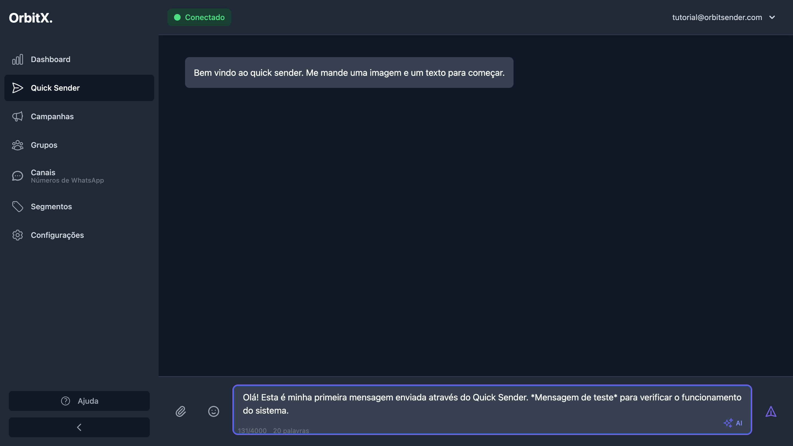
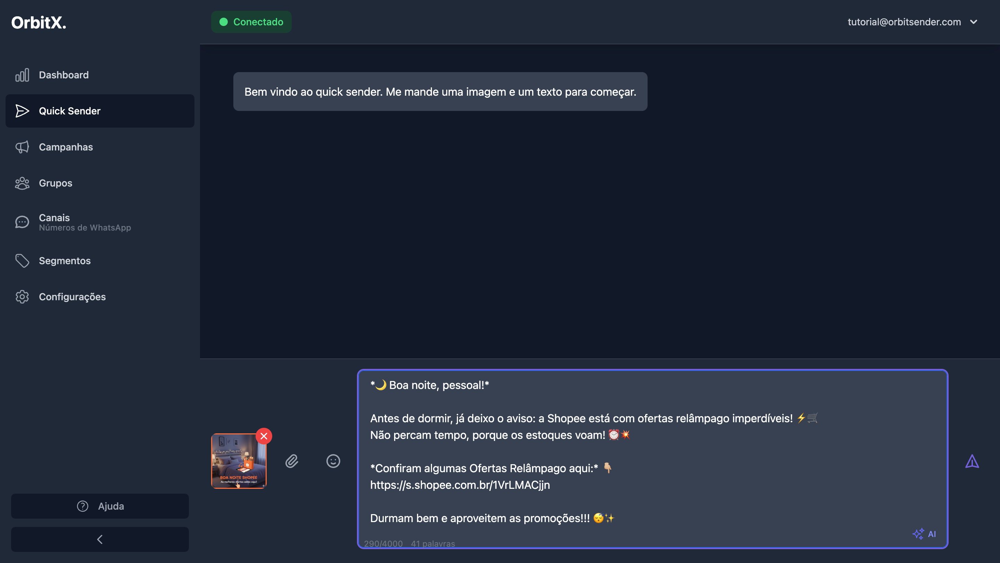
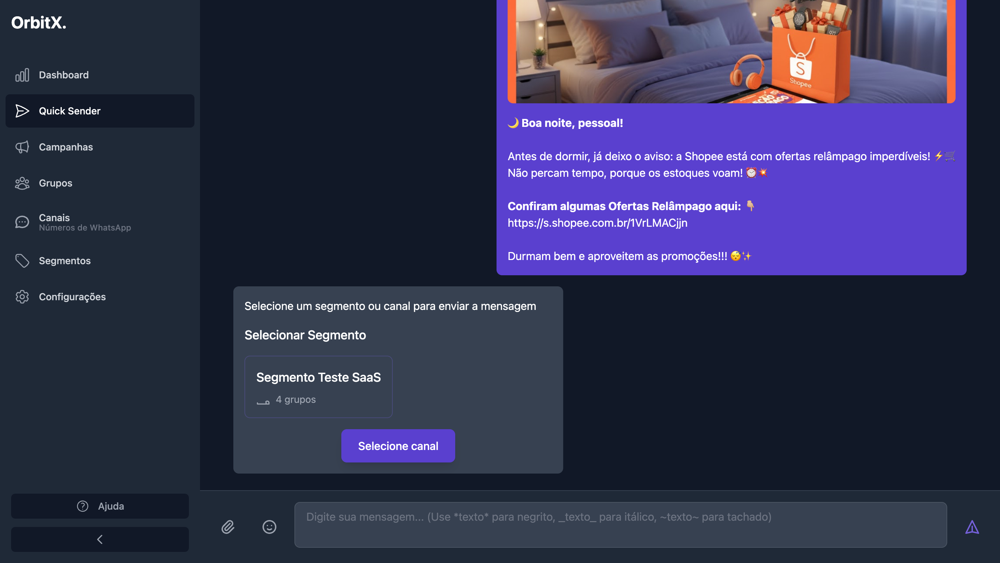
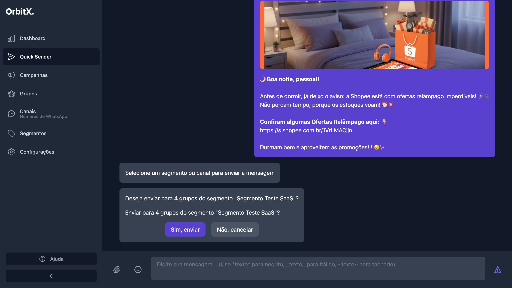
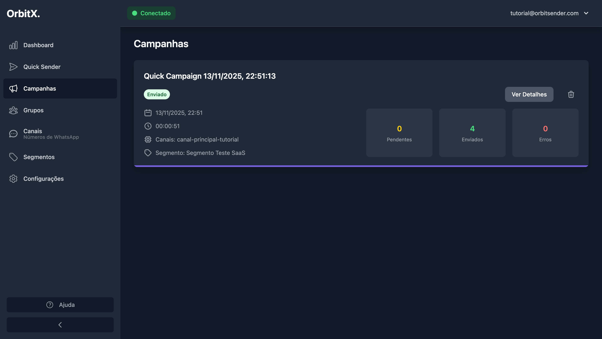

💬 Quick Sender - Enviar Primeira Campanha
Tutorial completo passo a passo para enviar sua primeira campanha usando o Quick Sender
📚 Páginas Relacionadas
O que é o Quick Sender?
O Quick Sender é uma funcionalidade que permite fazer disparos rápidos de forma intuitiva e eficiente, como um chat. É ideal para:
- Disparos rápidos: Enviar mensagens de forma imediata sem precisar criar uma campanha completa
- Simplicidade: Interface similar a um chat, fácil de usar
- Eficiência: Processo rápido e direto para enviar mensagens
Antes de usar o Quick Sender, certifique-se de ter:
- Um canal conectado e ativo (veja Conexão de Canais)
- Pelo menos um segmento criado (veja Criação de Segmentos)
- Configurações de disparo ajustadas (veja Configurações)
Passo 1: Acessar o Quick Sender
- No menu lateral, clique em "Quick Sender"
- Ou acesse diretamente em:
https://app.orbitsender.com/quick-sender - Você verá uma interface similar a um chat com uma mensagem de boas-vindas
- Na parte inferior, você encontrará os campos para adicionar imagem e texto

A tela inicial mostra:
- Uma mensagem de boas-vindas: "Bem vindo ao quick sender. Me mande uma imagem e um texto para começar."
- Botão "Adicionar arquivo" para upload de imagens
- Botão "Adicionar emoji" para incluir emojis na mensagem
- Campo de texto para digitar sua mensagem
Passo 2: Preencher a Mensagem
Digite ou cole sua mensagem no campo de texto:
- Clique no campo de texto na parte inferior da tela
- Digite ou cole sua mensagem
- Você pode usar formatação:
*texto*para negrito_texto_para itálico~texto~paratachado
- O contador mostra quantos caracteres e palavras você já digitou (ex: "131/4000 20 palavras")
Passo 3: Adicionar Imagem (Opcional)
Você pode adicionar uma imagem à sua mensagem:
- Clique no botão "Adicionar arquivo" ou use uma das opções:
- Clique para selecionar um arquivo do seu computador
- Arraste e solte a imagem na área indicada
- Cole a imagem usando Ctrl+V (Cmd+V no Mac)
- Aguarde alguns segundos enquanto a imagem é carregada
- Você verá um preview da imagem acima da mensagem

O sistema aceita apenas os seguintes formatos de imagem:
- PNG
- JPG
- JPEG
Se você usar outro formato (WEBP, GIF animado, etc.), converta primeiro.
O upload da imagem pode levar alguns segundos dependendo do tamanho do arquivo e da sua conexão. Aguarde até ver o preview da imagem antes de continuar.
Passo 4: Enviar e Selecionar Segmento
Após preencher a mensagem e adicionar a imagem (se desejar), envie a mensagem:
- Clique no botão de enviar (ícone de avião de papel) no canto direito do campo de texto
- O sistema mostrará um preview da mensagem que será enviada
- Você será solicitado a selecionar um segmento ou canal para enviar a mensagem

Na tela de seleção, você verá:
- Um preview da mensagem completa (imagem + texto)
- Uma seção "Selecionar Segmento" com os segmentos disponíveis
- Cada segmento mostra quantos grupos ele contém (ex: "4 grupos")
- Um botão "Selecione canal" caso queira enviar para um canal específico
Se você ainda não criou um segmento, veja o tutorial sobre Criação de Segmentos antes de continuar.
Passo 5: Confirmar Envio
Após selecionar o segmento:
- Clique no segmento desejado (ex: "Segmento Teste SaaS")
- O sistema mostrará uma confirmação com o número de grupos que receberão a mensagem
- Uma mensagem aparecerá perguntando: "Deseja enviar para X grupos do segmento 'Nome do Segmento'?"
- Clique em "Sim, enviar" para confirmar

Após confirmar, você verá uma mensagem de sucesso: "Campanha criada com sucesso! Status: Pendente. Você pode começar novamente."
O sistema retornará à tela inicial do Quick Sender, permitindo que você crie uma nova mensagem se desejar.
Passo 6: Verificar Campanha na Lista
Após criar a campanha pelo Quick Sender, você pode acompanhá-la na página de Campanhas (https://app.orbitsender.com/campaigns):
- No menu lateral, clique em "Campanhas"
- Ou acesse diretamente em:
https://app.orbitsender.com/campaigns - Você verá a campanha recém-criada listada
- A campanha terá o nome "Quick Campaign" seguido da data e hora de criação

Acompanhando o Progresso da Campanha
Na página de Campanhas (https://app.orbitsender.com/campaigns), você pode ver todas as informações sobre sua campanha:
Informações Exibidas:
- Nome da Campanha: "Quick Campaign" + data e hora
- Status: Indica o estado atual:
- Pendente: Aguardando na fila para ser enviada
- Enviando: Atualmente sendo processada
- Concluída: Finalizada com sucesso
- Erro: Algum problema ocorreu durante o envio
- Data e Hora: Quando a campanha foi criada
- Status de Execução: "Aguardando execução" quando pendente
- Canais: Qual canal será usado para o envio
- Segmento: Qual segmento foi selecionado
Estatísticas em Tempo Real:
A campanha mostra três contadores importantes:
- Pendentes: Quantos grupos ainda estão aguardando receber a mensagem
- Enviados: Quantos grupos já receberam a mensagem com sucesso
- Erros: Quantos grupos tiveram erro no envio
Os números são atualizados em tempo real enquanto a campanha está sendo processada. Você pode acompanhar o progresso visualmente através desses contadores.
Fila de Campanhas
Quando você envia múltiplas campanhas pelo Quick Sender:
Como Funciona:
- Cada mensagem cria uma nova campanha: Cada vez que você envia pelo Quick Sender, uma nova campanha é criada
- As campanhas entram em uma fila: As campanhas são processadas em ordem de criação
- Intervalo entre campanhas: O sistema respeita o intervalo configurado nas Configurações
- Processamento sequencial: Após uma campanha finalizar, a próxima na fila começa automaticamente
Status da Fila:
- Pendente: Campanha aguardando na fila
- Em Fila: Campanha agendada para ser processada após a atual
- Enviando: Campanha sendo processada no momento
Você pode:
- Aumentar o intervalo entre campanhas nas Configurações
- Criar várias mensagens no Quick Sender de uma vez
- O sistema irá disparando automaticamente durante o dia, respeitando os intervalos
Isso é útil para ter disparos automáticos ao longo do dia sem precisar estar presente o tempo todo.
Ações Disponíveis na Lista de Campanhas
Para cada campanha, você tem acesso a várias ações:
- Ver Detalhes: Visualiza informações detalhadas sobre a campanha, incluindo estatísticas por grupo
- Cancelar: Cancela uma campanha que ainda está pendente ou na fila
- Excluir: Remove a campanha da lista (após concluída ou cancelada)
Ao cancelar uma campanha que está sendo enviada, apenas os grupos que ainda não receberam a mensagem serão cancelados. Grupos que já receberam não serão afetados.
Dicas de Uso
✅ Boas Práticas
- Revise a mensagem e imagem antes de enviar
- Verifique se o segmento selecionado está correto
- Monitore as campanhas na página de Campanhas (
https://app.orbitsender.com/campaigns) - Aguarde o upload completo da imagem antes de enviar
ℹ️ Funcionalidades
- Pode ser usado pelo computador ou celular
- Recomendamos computador para primeira vez
- Funciona como um chat comum
- Suporte a formatação de texto (negrito, itálico, tachado)
Problemas Comuns
❌ Botão não aparece no celular
Solução:
- Tente rolar a tela para baixo
- Rotacione o celular (modo paisagem)
- Use o computador para criar canais e configurações
- Use o celular para monitorar campanhas
❌ Erro ao enviar imagem
Solução:
- Verifique se o formato é PNG, JPG ou JPEG
- Se for outro formato, converta primeiro
- Reduza o tamanho da imagem se for muito grande
- Tente enviar apenas o texto primeiro para testar
- Aguarde alguns segundos após fazer upload da imagem
❌ Segmento não aparece na seleção
Solução:
- Certifique-se de que você criou pelo menos um segmento (veja Criação de Segmentos)
- Verifique se o segmento tem grupos selecionados
- Recarregue a página
- Crie um novo segmento se necessário
❌ Campanha não aparece na lista
Solução:
- Recarregue a página de Campanhas (
https://app.orbitsender.com/campaigns) - Verifique se você confirmou o envio corretamente
- Verifique se há mensagens de erro no console do navegador
- Tente criar outra campanha para testar
Resumo do Processo
- ✅ Acesse o Quick Sender pelo menu lateral ou diretamente em:
https://app.orbitsender.com/quick-sender - ✅ Preencha a mensagem no campo de texto
- ✅ Adicione uma imagem (opcional) - aguarde o upload completo
- ✅ Clique em enviar
- ✅ Selecione o segmento desejado
- ✅ Confirme o envio clicando em "Sim, enviar"
- ✅ Acompanhe a campanha na página de Campanhas (
https://app.orbitsender.com/campaigns) - ✅ Monitore o progresso através das estatísticas em tempo real
Próximos Passos
Agora que você aprendeu a usar o Quick Sender, explore: